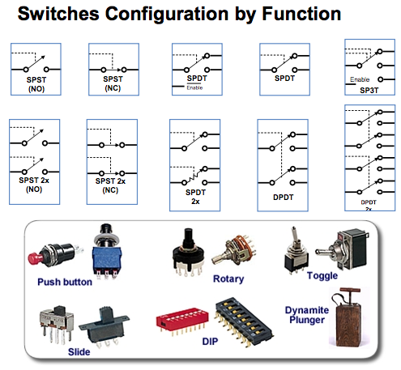
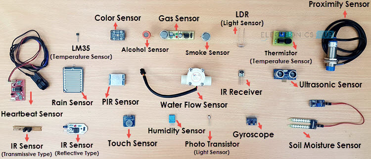
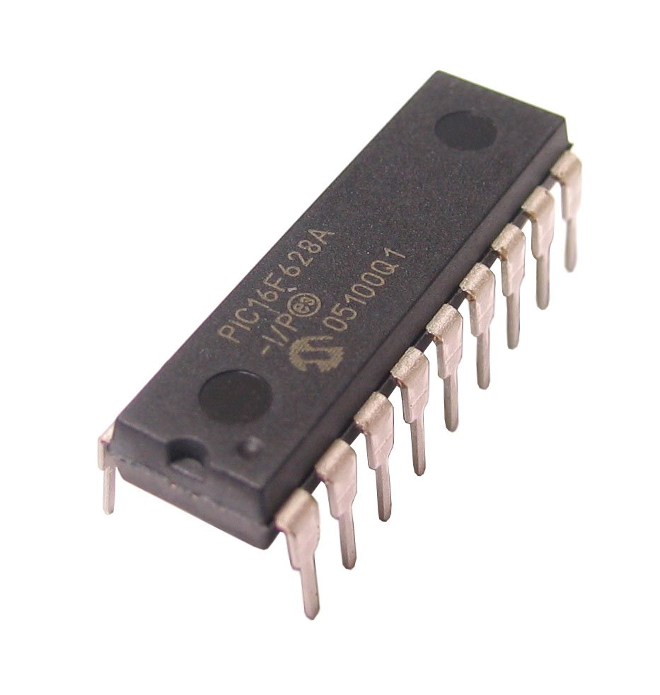
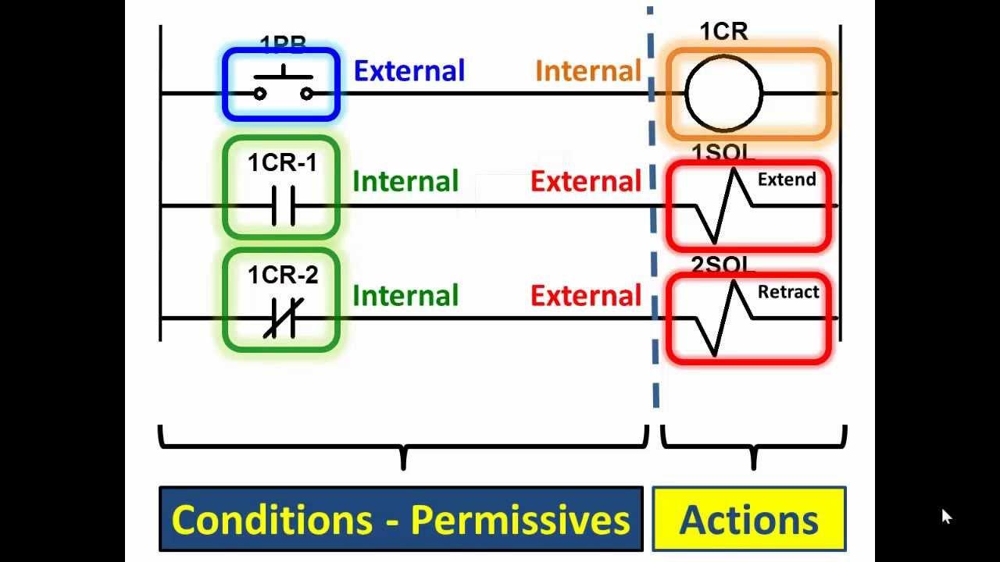
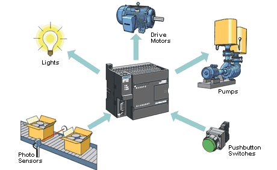
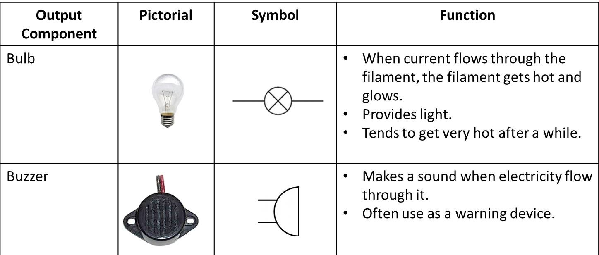
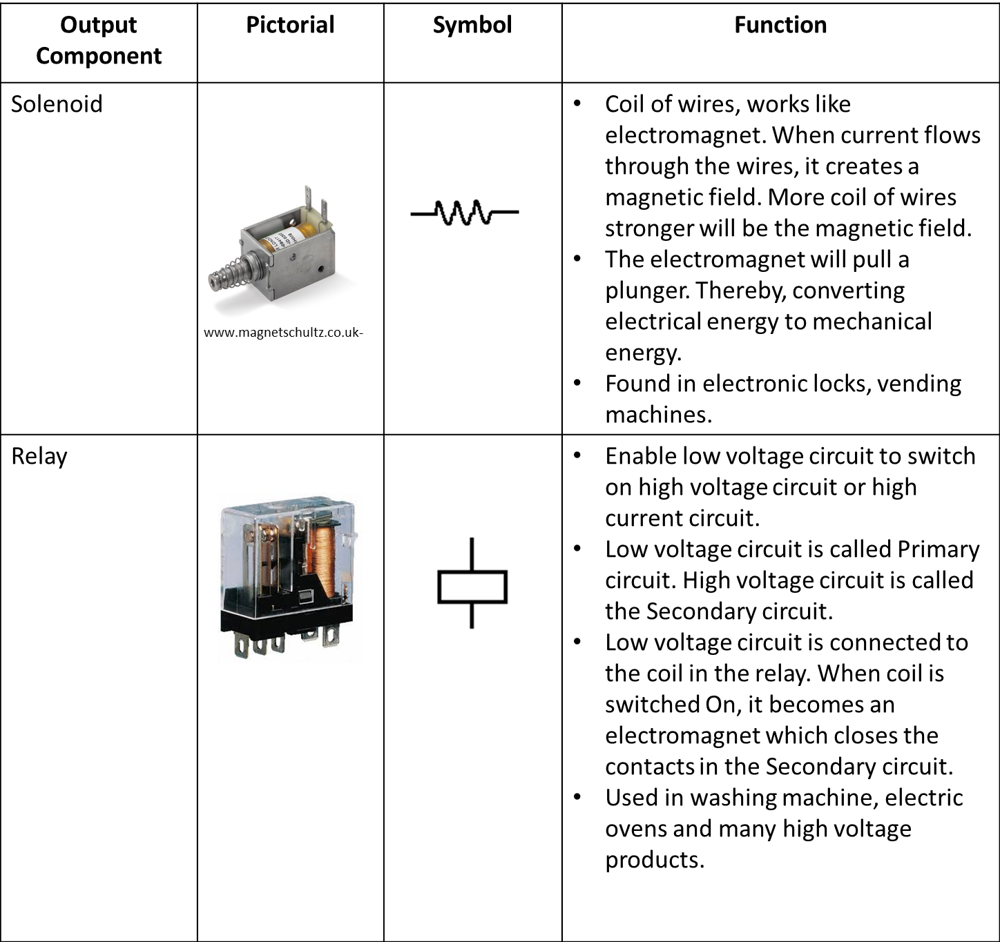
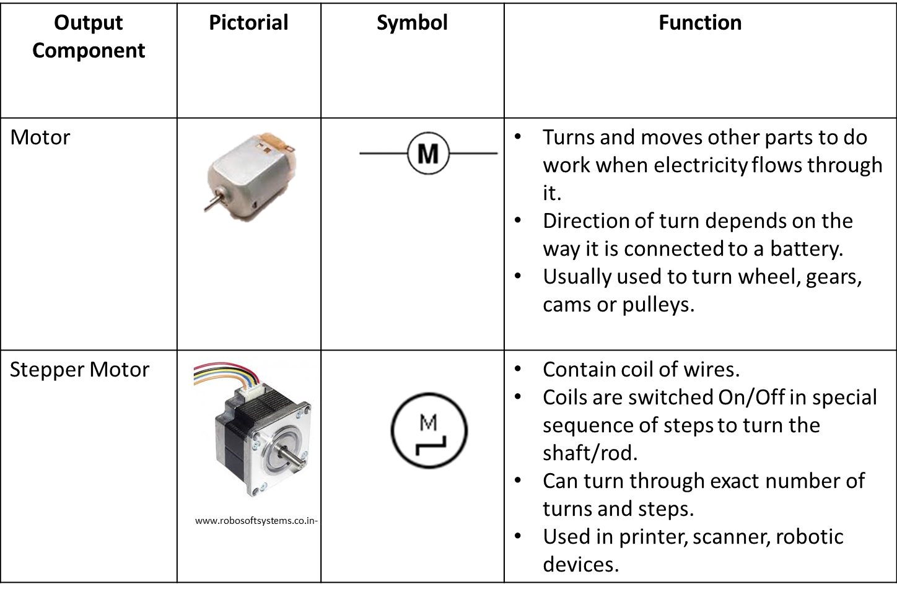

Technical Understanding 2
Table of Contents

1 How electronic systems offer functionality to design solutions
6.4a Demonstrate an understanding of how electronic systems provide input, control and output process functions, including:
i. Switches and sensors, to produce signals in response to a variety of inputs.
Click on this link to read more about switches and sensors.
An electrical switch is any device used to interrupt the flow of electrons in a circuit. Switches are essentially binary devices: they are either completely on (“closed”) or completely off (“open”).

A sensor is a device, module, or subsystem whose purpose is to detect events or changes in its environment and send the information to other electronics, frequently a computer processor.

ii. Programmable control devices.

A microprocessor is a multi-function programmable device. Microprocessors enable computers to work, and they can also be used to control many types of electronic system.
An alternative type of programmable component is the microcontroller or PIC. Microcontrollers are essentially single-purpose microprocessors, and they enable designers to use the same device to control a wide range of situations, while being cheaper than a computer control system. The rate at which the PIC works is controlled by an internal clock.
For example, the various systems in a car could be controlled either by a single microprocessor controlling a number of different functions at once, or by a series of microcontrollers, each controlling specific functions such as fuel consumption.
The advantage of the microprocessor is that one device can control everything. The disadvantage comes if the microprocessor malfunctions: all the systems could be affected and the replacement cost is high. With microcontrollers, on the other hand, if one is damaged it can be easily replaced and when one fails the others continue to function.
An alternative to the PIC is a Programmable Logic Controller (PLC). A programmable logic controller (PLC), or programmable controller is an industrial digital computer which has been ruggedized and adapted for the control of manufacturing processes, such as assembly lines, or robotic devices, or any activity that requires high reliability control and ease of programming and process fault diagnosis.


iii. Signal amplification.
An amplifier, electronic amplifier or (informally) amp is an electronic device that can increase the power of a signal (a time-varying voltage or current). An amplifier uses electric power from a power supply to increase the amplitude of a signal. The amount of amplification provided by an amplifier is measured by its gain: the ratio of output voltage, current, or power to input. An amplifier is a circuit that has a power gain greater than one.
There are many different circuits available to amplify signals, below are a few common examples.
The Common Emitter Amplifier
The Push-Pull amplifier
Operational amplifiers (Op-Amps)
Click on link to read more about op-amps
iv. Devices to produce a variety of outputs including light, sound, motion.
An output device is any device used to send data from a microcontroller to another device. Most microcontroller data output that is meant for humans is in the form of audio, visual or movement. Thus, most output devices used by humans are in these categories. Examples include LEDs, speakers, buzzers, DC motors and stepper motors.



6.4b Demonstrate an understanding of the function of an overall system, referring to aspects, including:
i. passive components: resistors, capacitors, diodes
ii. inputs: sensors for position, light, temperature, sound, infra-red, force,
rotation and angle
iii. process control: programmable microcontroller
iv. signal amplification: MOSFET, driver ICs
v. outputs: LED, sounder, solenoid, DC motor, servo motor
vi. analogue and digital signals and conversion between them
vii. open and closed loop systems including feedback in a system and how it
affects the overall performance
viii. sub-systems and systems thinking.
6.4c Demonstrate an understanding of what can be gained from interfacing electronic circuits with mechanical and pneumatic systems and components, such as:
i the ability to add electronic control as an input to mechanical or pneunamitc
output
ii the use of flow restrictors to control cylinder speed
iii the use of sensors to measure rotational speed, strain/force, distance.
6.4d Demonstrate an understanding of networking and of communication protocols, such as:
i wireless devices, such as: RFID, NFC, Wi-Fi, bluetooth
ii embedded devices
iii smart objects
iv networking electronic products to exchange information.
6.4e Demonstrate an understanding of the basic principles of electricity, including:
i. voltage
ii. current
iii. ohms law
iv. power
2 How programmable devices and smart technologies provide functionality in system design
6.5a Demonstrate an understanding of how smart materials change the functionality of engineered products, such as:
i colour changes, shape-shifting, motion control, self-cleaning and self-healing.
6.5b Demonstrate an understanding of how programmable devices are used to add functionality to products, relating to coding of and specific applications of programmable components, such as:
i. how they incorporate enhanced features that can improve the user experience and solve problems in system design
ii. how they use basic techniques for measuring, controlling, storing data and displaying information in practical situations
iii. electronic prototyping platforms and interated development environments (IDE) for simulation in virtual environments
iv. the use of programmable components and microcontrollers found in products and systems such as robotic arms or cars
v. creating flowcharts to describe processes and decisions within a process to control input and output components.